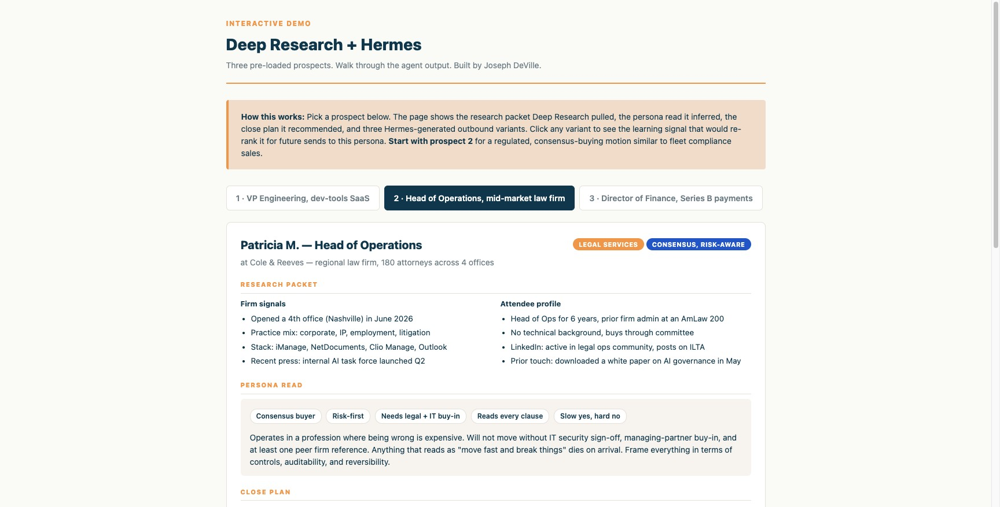
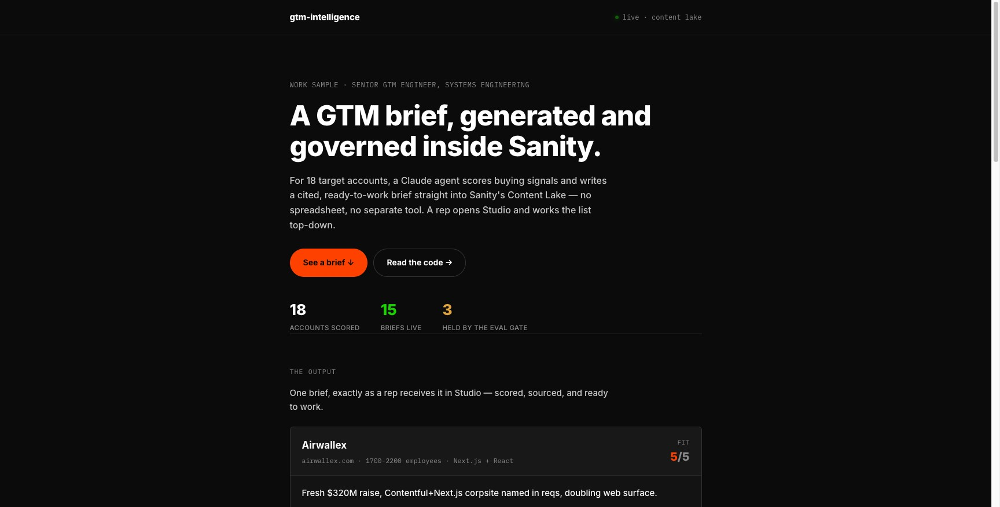
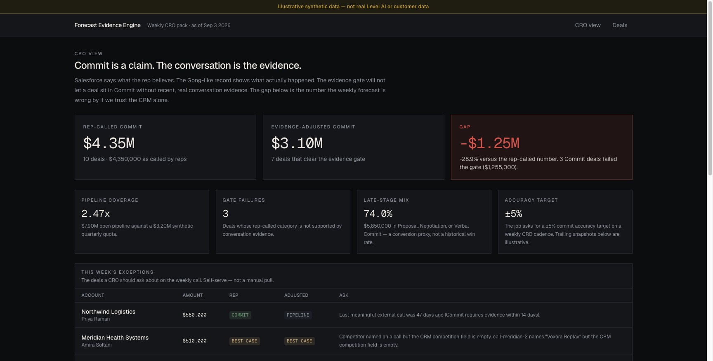
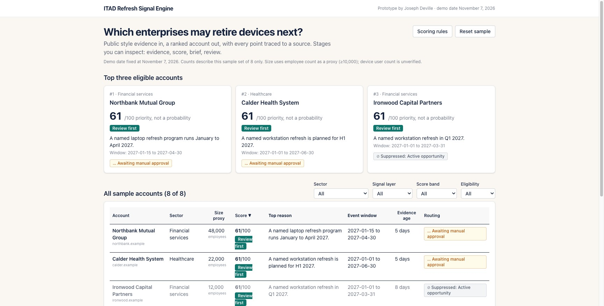
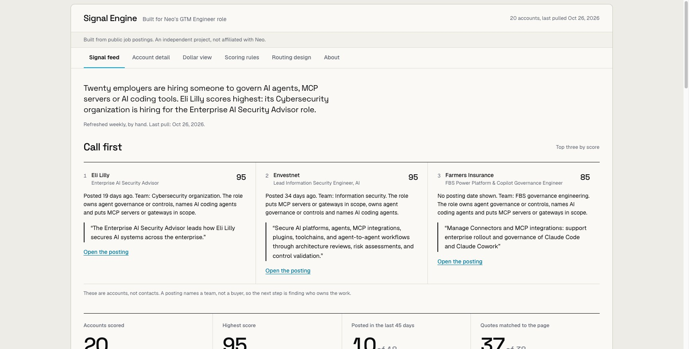
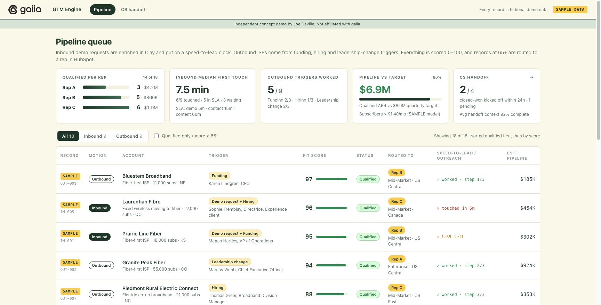
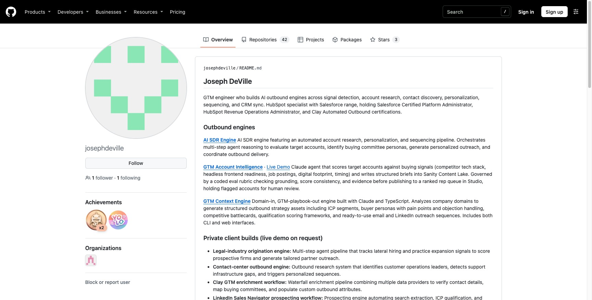

Joseph DeVille
GTM engineer / FDE
Signal feeds, research agents, personalized outbound, deliverability. Measured in pipeline, not activity.

Deep Research + Hermes
Calendar-style trigger to research packet, persona, close plan, learning outbound. Static walkthrough. No public LLM.

GTM account briefs
Eval-gated Sanity queue. Briefs ranked before a rep sees them.

Forecast Evidence Engine
Commit vs evidence-adjusted Commit. Interactive CRO view. Synthetic data.

ITAD signal engine
Public events scored into who may act next.

Neo signal engine
Hiring signals from public postings, scored into an employer queue.

gaiia GTM engine
Clickable pipeline queue and routing UI. Concept demo.
01–05
Case studies
Hermes, BDR feed, Rainforest bounce drop, Anchor and Crux outbound.

github.com/josephdeville
The rest of the work lives here. Repos, not a brochure.
I build GTM systems reps actually use.
TypeScript and Python. Agents, enrichment, routing, outbound, deliverability. One foot in pipeline this quarter, one in process that compounds.
Some of this work maps to fleet compliance GTM (DOT / FMCSA): new authority, fleet growth, renewals. Foley is one audience for that pattern, not the name of the site.